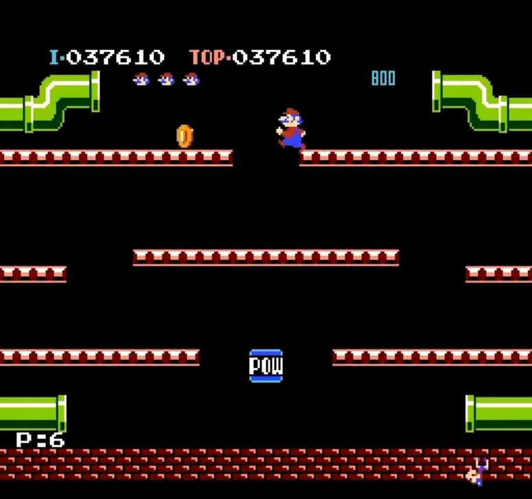
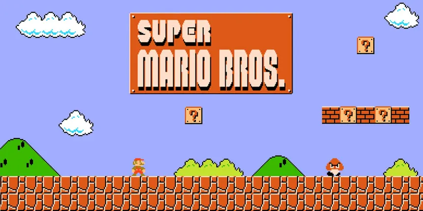
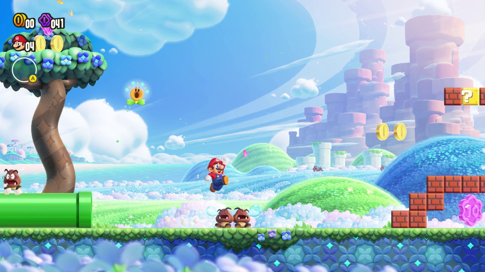

Creador

Su creador es Shigeru Miyamoto. Se unió a Nintendo en 1977, siendo su primer proyecto el videojuego "Donkey Kong". Debido a su éxito, Nintendo le dio su propio equipo de desarrollo, conocido como "Nintendo EAD".
Inicios
Los inicios de la saga no fueron como tal un "Super Mario Bros", sino que se le conocía como "Mario Bros", que salió en el año 1983 y sirvió como base para los siguientes juegos de la saga. Dos años más tarde aparecería "Super Mario Bros".
Actualidad
Con 40 años de historia a sus espaldas, la franquicia de Super Mario Bros se ha expandido por todos lados, siendo una de las sagas más icónicas de la industria de los videojuegos. En la actualidad, sigue sacando nuevas entregas con la fórmula clásica o experimentando con otros géneros.